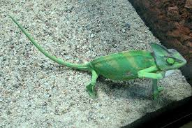
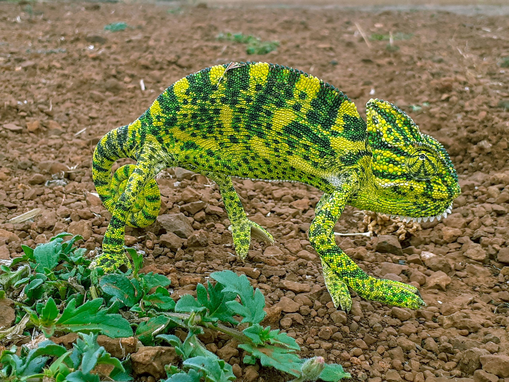
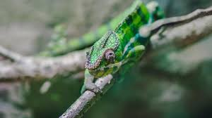
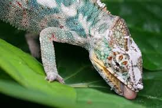
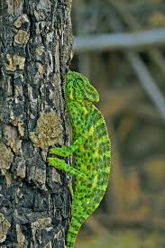

I have always liked lizards, they have always been cool and facinating to me. But why is my favorite a chamelon. A lot of people would tell you that they like an animal because the animal is cute and silly. I like chamelons because they are cute and silly, that is mostly the reason why i like them, but that is not the only reason. The second reason, witch is not why i mostly like them, I like them because I have a old stuffy, witch is a chamelon. That stuffy made me like them a little more, to the point of them being my favorite animal.

from StockVault by unknown

from PixaHive by unknown

from Freerange Stock by unkown

from Pixnio by Pixle-mixer

from Needpix.com by unknown